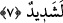

olması da câizdir. Nitekim Allah Teâlâ: “Bir deneme olarak sizi şerle de hayırla da
imtihan ederiz.” (el-Enbiya, 21/35) buyurmuştur. Allah, kullarını sabretsinler ve bu
sabırları bir mihnet olsun diye şer ile imtihan ettiği gibi, şükretsinler ve şükürleri nîmet
olsun diye hayır ile imtihan eder.
7. “Hatırlayın ki Rabbiniz size: “Eğer şükrederseniz, elbette size (nîmetimi)
artırırım ve eğer nankörlük ederseniz hiç şüphesiz azâbım çok şiddetlidir! diye
bildirmişti.”
“Hatırlayın ki Rabbiniz size:” Bu âyet de Mûsâ (a.s.)’ın kavmine söylediği
sözlerdendir. Yâni, Allah’ın üzerinizdeki nîmetini hatırlayın ve size şöyle bildirdiği
vakti de hatırlayın.
Rabbiniz size bildirerek şöyle demişti: Ey İsrailoğulları! “Eğer” düşmanlarınızı
helâk edip sizi kurtarma ve diğer nîmetlerime “şükrederseniz” ve nîmetlerimi îmanda
ve sâlih amellerde sebat göstermek sûretiyle karşılarsanız “elbette” nîmete nîmet
katarak “size” nîmetimi “artırırım” size verdiklerimi de katlarım.
Kâşifî şöyle der: “Şeyh Abdurrahman Sülemî, Ebû Ali Cürcânî’nin bu âyet
hakkında şöyle dediğini nakleder:
“Eğer İslâm nîmetine şükrederlerse, onlara ilâve olarak îmânı veririm. Eğer îmân
üzerine bana hamd ederlerse onlara ilâve olarak ihsânı veririm. Eğer ona şükrederlerse
onlara ilâve olarak ma‘rifeti veririm. Eğer ma‘rifete şükredenlerden olurlarsa onları
vuslat makamına eriştiririm. Eğer ona şükrederlerse onları kurbiyyet derecesine
yükseltirim. Yine o nîmetin şükrü sebebiyle onları üns ve müşâhede halvetgâhına
ulaştırırım. Bu hakîkatleri bildiren bu sözden mâlum oldu ki şükür, terakkînin merdiveni
ve mânevî derecelere yükselmenin vâsıtasıdır.”
Mesnevî’de şöyle denilir:
Nîmete şükretmek senin nîmetini artırır
Bir kimse şükürden nasıl zarar eder?
Şükür gönülde olan illetlerin giderilmesine sebep olur
Şükreden gönlünün her arzusuna nâil olur
et-Te’vîlâtü’n-Necmiyye’de şöyle der: “Eğer” tevfîkıma “şükrederseniz, elbette
size” Bana yakın olma nîmetini “artırırım. Eğer” Bana yakın olmaya “şükrederseniz,
elbette size” Benim size yakın olmam nîmetini “artırırım. Eğer” Benim size yakın